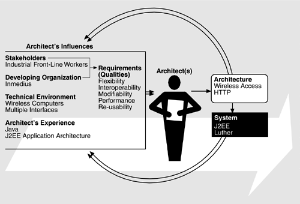

| [ Team LiB ] |
|
17.1 Relationship to the Architecture Business CycleFigure 17.1 shows the Architecture Business Cycle (ABC) as it pertains to Inmedius and the Luther architecture. The quality goals of re-usability, performance, modifiability, flexibility of the end user device, and interoperability with standard commercial infrastructures are driven, as always, by the business goals of the customer and the end user. Figure 17.1. The ABC as it pertains to Inmedius and Luther INFLUENCES ON THE ARCHITECTUREThe next sections elaborate on the things that influence the Luther architecture. End UsersInmedius's business is providing computer support for front-line workers. Figure 17.2 shows such a worker utilizing one of the hardware configurations supported by Luther applications. The worker is performing an industrial process, the steps of which are displayed on the head-mounted display apparatus that he is wearing. The computer is worn on the user's chest and uses a dial as its primary input device. The process is described in a manual stored on the back-office computers, and the manual pages are served to the worker as various steps of the process are completed, which can number more than 500. The worker reports the results of portions of the process to the back office via the system. A part may be replaced, for example, and the part number is reported so that the inventory can be adjusted and any quality-control ramifications analyzed. Figure 17.2. A field service worker using the Inmedius solution. Courtesy of Inmedius Corporation.The workers may need to use one or both hands to perform the process, so those hands are not available for computer input. Further, workers may need to be mobile to carry out the tasks. Different processes and customers may require different hardware configurations because requirements, such as mobility and the number of hands available for computer input, can vary. Developing OrganizationIf the Luther architecture can facilitate the development of complex enterprise solutions in a fraction of the time they take to develop as standalone, "stovepipe" systems, Inmedius gains a significant competitive advantage. To achieve this, the company must meet increasingly shorter time-to-market for enterprise solutions. The development cycles for these solutions have to be in the low single-digit months for Inmedius to remain competitive in its target markets. Solution development must be performed quickly and frugally by a few tens of engineers. The quality of the delivered solution must be high to ensure customer satisfaction. Also, the delivered software artifacts must be easily modifiable so that corrections and enhancements require little effort by Inmedius and do not compromise the integrity of the original solution's architecture. Technology EnvironmentLuther has been influenced by developments in both software and hardware. As we discussed in Chapter 16, J2EE provides enterprise solutions for commercial organizations. It was a good fit with the Luther requirement to interoperate with back-office processes. J2EE also facilitates the packaging of domain-specific application capabilities into re-usable components that can be combined in different ways. In addition to software influences, emerging hardware technology has influenced Luther—specifically, in the need to support small wireless computers with voice input capabilities and high-resolution, head-mounted displays. On the other hand, differing environments may require different types of devices, each with its own set of capabilities. This imposes a requirement that Luther be flexible with respect to the types of user interfaces supported. INFLUENCES ON THE ORGANIZATIONThe influences of Luther on the organization are in the areas of organizational structure, software developers' experience, and business approach. Organizational StructurePrior to Luther, Inmedius was a solution factory, with each solution developed as a stovepipe application for a specific customer. Organizationally, the Solution Group was the largest engineering group in the company. Luther's development created the need for a Products Group (containing a Component Development Group) to engineer and maintain the domain-specific component capabilities the Solution Group uses to create its solutions for customers. The Product Group is concerned with generalized capabilities for markets, whereas the Solution Group is concerned with specific applications for individual customers. This is an instance of a two-part organizational structure for software product lines, as described in Chapter 14 and illustrated by CelsiusTech case study in Chapter 15. Software Developers' ExperiencePrior to Luther, Inmedius was staffed with experienced and sophisticated software developers, who nonetheless had a number of new criteria to satisfy in Luther's development:
Business ApproachThe Luther architecture has had a dramatic effect on the way Inmedius does business. As we said in Chapter 14, single-system solutions require a large amount of resources, and this resource drain and the stovepipe ,mentality associated with single system development inhibits global thinking. The move to a product line based on Luther enabled Inmedius to begin thinking about product lines instead of focusing on individual systems. Furthermore, as we saw with CelsiusTech, new markets became available to Inmedius that could be seen as generalizations of existing markets, not only in a business sense but also in a technical sense. 17.2 Requirements and QualitiesThe Luther architecture was designed to meet two sets of complementary requirements. The first set governs the applications to be built—namely, enterprise applications for field service workers. These requirements are directly visible to customers, since failure to meet them results in applications that do not perform according to expectations—for instance, an application that may work correctly but perform poorly over a wireless network. The second set of requirements involves introducing a common architecture across products. This reduces integration time, brings products to market faster, increases product quality, eases introduction of new technologies, and brings consistency across products. Overall, the requirements can be separated into six categories:
Wireless AccessField service workers must move about while performing their tasks. Furthermore, they must move about in an environment rich in machines, hazards, and other people. In order to interact with back-office systems, the devices used by workers must access remote servers and data sources without being tethered by a landline to a local area network. Because of the variety of Inmedius customers, these wireless networks may need to be of varying capacity and availability. User InterfacePart of the Inmedius competitive advantage is its high-fidelity user interfaces, which allow a worker to focus on the task at hand without being hindered by the interface or the access device. Different devices have different screen footprints, and the Luther architecture must facilitate the display of meaningful information on each of them. This does not mean constructing a single user interface and adapting it to all device types. Instead, Luther must support the rapid construction of interfaces that filter, synthesize, and fuse information in ways that are displayable on a particular device and useful to its user. Variety of DevicesField service workers use a variety of computing devices in the field. No one device will suffice for all field applications, and each has limitations that must be addressed by the Luther architecture. Inmedius must engineer performance-enhancing solutions to run on all of these devices, which include:
Different classes of device have different memory footprints, processor speeds, and user input devices that can radically affect a user's interaction style from one class to another. For example, a wearable computer can bring the power of the desktop computer into the field, making client applications as sophisticated there as they are in the office. Users in this case also have a plethora of input devices to choose from, including keyboard, voice, pen, and custom devices. On the other hand, the processor speeds, memory footprints, and available input devices for the PDA class are severely limited, which means that user interactions that can be engineered for these devices are also constrained. Still, PDAs are extremely important in the various contexts in which field service workers perform their tasks. The Luther architecture must address the variability of the users' interaction styles, which are limited by differences in hardware capability among the device classes. Existing Procedures, Business Processes, and SystemsField service workers are only one part of most enterprises. Information gathered by them must be stored in the back office; instructions for them come, partially, from outside the field; and many applications already support existing business processes. To respond to these needs, the Luther architecture must intergrate its functions with a worker's existing procedures and processes, enable applications to be hosted on servers and databases from many vendors, and simplify the integration of applications with legacy systems Building ApplicationsEnabling faster construction of applications is one of the main motivations for Luther. There are a number of aspects to this goal, including:
Distributed ComputingThe Luther architecture must provide enterprise application developers with a framework and infrastructure that even out the differences in client device capabilities and provide application servers with the following distributed application features.
|
| [ Team LiB ] |
|